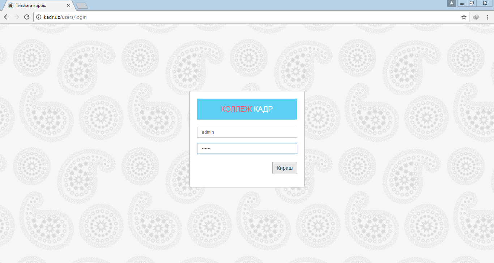

Дастурга кириш учун www.kadrsoft.nisd.uz манзилига ихтиёрий веб браузер (Google Chrome браузери тавсия қилинади) орқали кириш ва тегишли логин ва паролни териш керак бўлади.

Логин ва паролни тергандан сўнг "Кириш" тугмасини босинг шундан сўнг дастур асосий ойнаси очилади